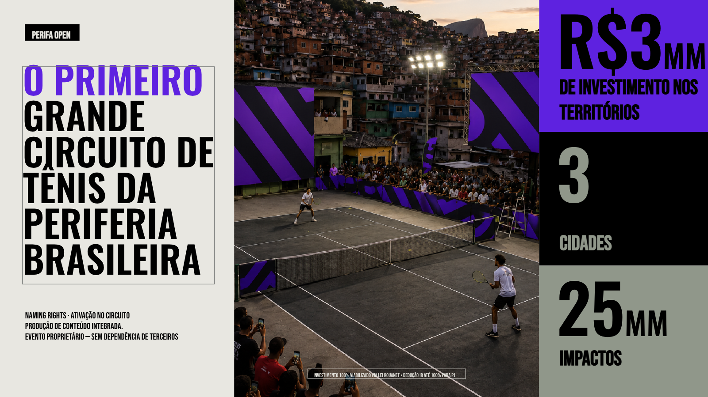
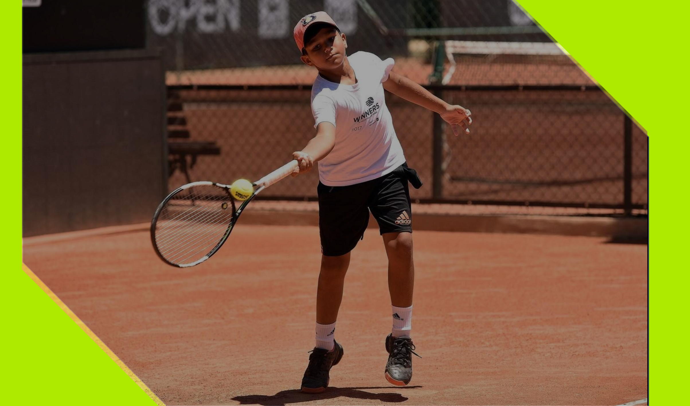

Legado visível
Projetos que deixam estrutura, acesso, repertório e orgulho comunitário.
Impacto
A Perifa Mídia cria projetos proprietários para gerar entregas concretas nas comunidades, com apoio de empresas, governos, prefeituras e parceiros que acreditam em investimento com impacto real.
O território deixa de ser só ponto de mídia e passa a receber estrutura, visibilidade, experiência e memória coletiva por meio de iniciativas desenhadas de dentro para fora.
Por que existe
Quando a Perifa Mídia cria um projeto proprietário, ela cria também uma infraestrutura de relacionamento, visibilidade, ativação e retorno para o território.
A marca deixa de apenas patrocinar e passa a sustentar uma agenda com consistência, escala e memória coletiva.
Projetos que deixam estrutura, acesso, repertório e orgulho comunitário.
Mais liberdade criativa, produção integrada e menor dependência de terceiros.
Empresas, leis de incentivo, apoiadores institucionais e alianças públicas no mesmo desenho.
Primeiro projeto
O Perifa Open inaugura a frente de projetos proprietários da Perifa Mídia em grande escala. É esporte, formação de imagem, produção de conteúdo e investimento direto no território acontecendo no mesmo projeto.
Ele nasce como uma plataforma aberta para marcas que querem apoiar a transformação com presença real e contrapartida de comunicação.


O que isso ativa
O Perifa Open amplia repertório e reposiciona o imaginário sobre quem pode ocupar o esporte, o centro da cena e os investimentos de marca.
Para as comunidades, isso significa visibilidade, circulação de recursos e novos símbolos de possibilidade. Para parceiros, significa entrar em um projeto com grandeza, legitimidade e potência cultural.
Investimento 100% viabilizado via Lei Rouanet, com possibilidade de dedução de até 100% para pessoa jurídica.
Vamos construir juntos